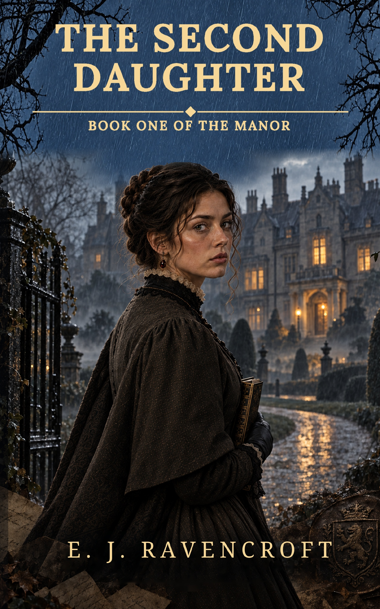

The Manor · Book One
The Second Daughter
For one year, Ashcombe Manor has stood abandoned.
But when a young carpenter is found dead at the foot of its staircase, frost on the floor and a strip of bloodstained cloth clutched in his hand, the villagers whisper that the old house has awakened again.
In London, Theodosia Marsh has made a profession of finding what respectable families would rather bury. Intelligent, independent and unwilling to accept omission as proof, she joins the guarded Constable, an investigator with his own troubled history at Wychwood, to uncover the truth behind the death.
Their search leads from locked family records and a patient at Bethlem to an ancient yew grove, a divided bloodline and a missing child whose fate has been concealed for generations. Every discovery draws them closer to the grieving presence within the manor: a woman whose love has curdled into vengeance, and who has mistaken an innocent family for those who wronged her.
As a storm gathers and another child prepares to enter the world, Theodosia must unravel the secret of Ashcombe's second daughter before the dead reclaim what they believe is theirs.